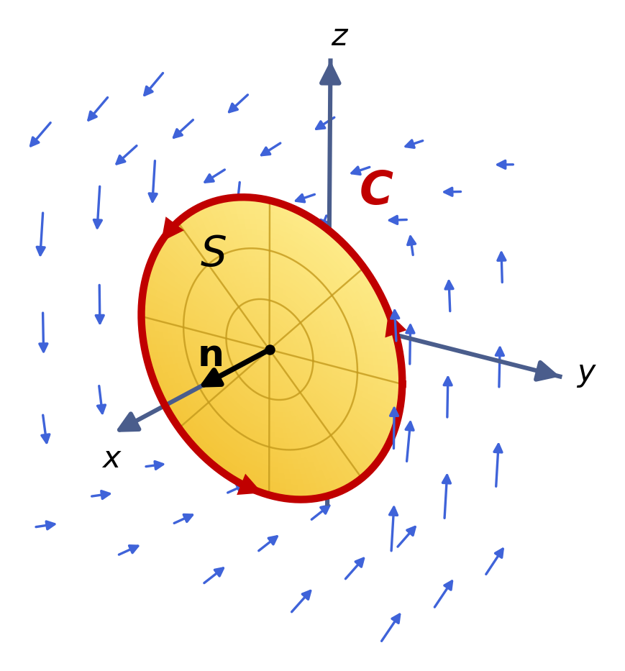

Lesson 45: Stokes' Theorem
Green’s Theorem showed that the work done by a vector field around a closed curve in the plane equals a double integral over the region inside the curve. Stokes’ Theorem extends this idea to three dimensions. The work done around a closed curve \(C\) in space equals a surface integral over any surface \(S\) whose boundary is \(C\).

Let \(S\) be an oriented, piecewise-smooth surface bounded by a simple, closed, piecewise-smooth curve \(C\) with positive orientation. Let \(\mathbf{F}\) be a vector field whose components have continuous partial derivatives on an open region containing \(S\). Then:
Stokes' Theorem
Put simply, the work done by \(\mathbf{F}\) around the boundary curve \(C\) equals the surface integral of \((\operatorname{curl}\mathbf{F}) \dotp \mathbf{n}\) over the surface \(S\).
Positive orientation means the direction of \(C\) and the normal \(\mathbf{n}\) follow the right-hand rule: curl the fingers of your right hand in the direction of \(C\), and your thumb points in the direction of \(\mathbf{n}\).
An Example
Let \(\mathbf{F}(x, y, z) = \langle 0, -z, y \rangle\), and let \(C\) be the curve \(\mathbf{r}(t) = \langle 2, 3\cos t, 3\sin t \rangle\), \(0 \le t \le 2\pi\).
- Find the work done by \(\mathbf{F}\) around \(C\) directly, using the line integral.
- Confirm your result using Stokes’ Theorem.
Part (a)
Step 1: Differentiate \(\mathbf{r}(t) = \langle 2,\ 3\cos t,\ 3\sin t \rangle\).
Step 2: Write \(\mathbf{F}\) along the curve. Along \(C\), \(y = 3\cos t\) and \(z = 3\sin t\).
Step 3: Find the dot product.
Step 4: Integrate over \(0 \le t \le 2\pi\).
Part (b)
Step 1: Choose a surface. The curve \(C\) is a circle of radius \(3\) in the plane \(x = 2\), so let \(S\) be the disk in that plane bounded by \(C\).
Step 2: Find the curl of \(\mathbf{F} = \langle 0,\ -z,\ y \rangle\).
Step 3: Take the partial derivatives of \(\mathbf{R}(u, v)\).
Step 4: Find the cross product.
This normal points in the positive \(x\)-direction. As \(t\) increases, \(C\) goes counterclockwise when viewed from the positive \(x\)-axis, so the right-hand rule agrees with this normal.
Step 5: Find \(\mathbf{n}\).
Step 6: Find \(f = (\operatorname{curl}\mathbf{F}) \dotp \mathbf{n}\).
Step 7: Find \(dS\).
Step 8: Substitute into the double integral and evaluate.
Both methods give \(18\pi\).
An Example
Find the work done by the vector field \(\mathbf{F}\) as a particle moves once around the closed curve \(C\). Use Stokes’ Theorem and the given surface \(S\).
By Stokes’ Theorem, the work is the surface integral below.
Step 1: Find the curl of \(\mathbf{F}\).
Step 2: Take the partial derivatives of \(\mathbf{R}(u, v) = \langle u,\ v,\ 1 - u - v \rangle\).
Step 3: Find the cross product.
This normal points upward (its \(\mathbf{k}\)-component is positive). By the right-hand rule, using it means \(C\) is traversed counterclockwise when viewed from above.
Step 4: Write the curl on the surface. On \(S\), \(x = u\) and \(z = 1 - u - v\).
Step 5: Find \(\mathbf{n}\).
Step 6: Find \(f = (\operatorname{curl}\mathbf{F}) \dotp \mathbf{n}\).
Step 7: Find \(dS\).
Step 8: Substitute into the double integral and evaluate over \(0 \le u \le 2\), \(0 \le v \le 1\).
An Example
Find the work done by the vector field \(\mathbf{F}\) as a particle moves once around the closed curve \(C\). Use Stokes’ Theorem and the given surface \(S\).
By Stokes’ Theorem, the work is the surface integral below.
Step 1: Find the curl of \(\mathbf{F}\).
The difficult terms drop out: \(\sin\left(x^3\right)\) depends only on \(x\), so its \(y\)- and \(z\)-derivatives are \(0\), and \(\cos\left(z^4\right)\) depends only on \(z\), so its \(x\)- and \(y\)-derivatives are \(0\).
Step 2: Take the partial derivatives of \(\mathbf{R}(u, v) = \langle u,\ v,\ u^2 + v^2 \rangle\).
Step 3: Find the cross product.
This normal points upward (its \(\mathbf{k}\)-component is positive). By the right-hand rule, using it means \(C\) is traversed counterclockwise when viewed from above.
Step 4: Write the curl on the surface. On \(S\), \(x = u\) and \(y = v\).
Step 5: Find \(\mathbf{n}\).
Step 6: Find \(f = (\operatorname{curl}\mathbf{F}) \dotp \mathbf{n}\).
Step 7: Find \(dS\).
Step 8: Substitute into the double integral and evaluate over \(0 \le u \le 2\), \(0 \le v \le 1\).
Notice how Stokes’ Theorem lets us avoid the difficult terms \(\sin\left(x^3\right)\) and \(\cos\left(z^4\right)\) entirely.